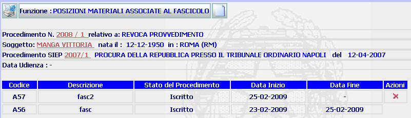

POSIZIONI MATERIALI ASSOCIATE AL FASCICOLO: La funzione consente di visualizzare le posizioni materiali associate al fascicolo e di associarne di nuove.
LE MASCHERE VIDEO
La funzione viene realizzata attraverso la maschera seguente in cui compaiono gli estremi del procedimento Sius, il nome del soggetto, gli estremi del procedimento Siep e l'eventuale data di udienza, nonchè un pulsante mediante il quale è possibile associare una nuova posizione materiale al fascicolo.

COME FARE PER ...
| Per visualizzare il dettaglio del procedimento Sius l'utente deve cliccare sul link relativo all'Anno/Numero del procedimento Sius evidenziato in rosso; |

| Per visualizzare il dettaglio del soggetto l'utente deve cliccare sul link relativo al cognome/nome del soggetto evidenziato in rosso; |

| Per visualizzare il dettaglio del procedimento Siep l'utente deve cliccare sul link relativo all' Anno/Numero del procedimento Siep evidenziato in rosso; |

|
Per
associare una nuova posizione
materiale al fascicolo l'utente deve
selezionare il pulsante |
PULSANTI
Sono presenti i pulsanti
 ,
,
 e
e  facenti parte del gruppo di
pulsanti di "Uso Comune"
facenti parte del gruppo di
pulsanti di "Uso Comune"